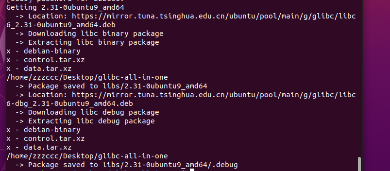
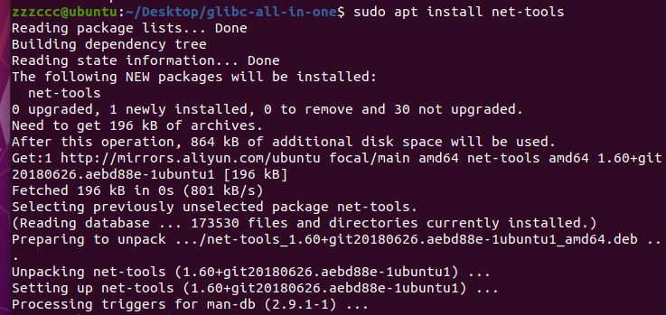
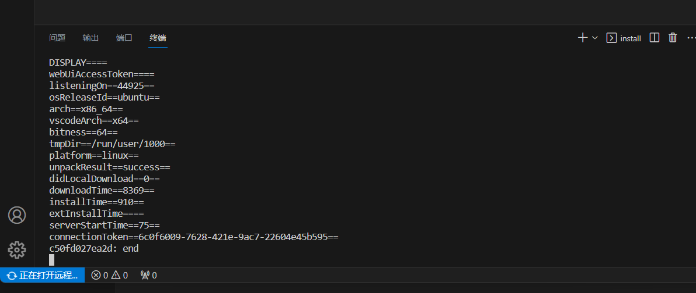
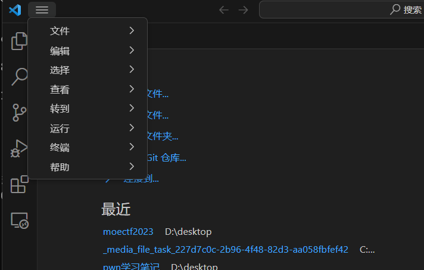
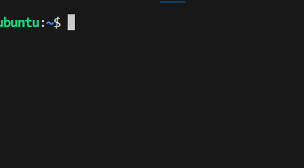

Ubuntu20.04pwn环境安装
更换软件源
要在 Ubuntu 20.04上更改软件源，您可以按照以下步骤进行操作：
打开终端：您可以通过按下
Ctrl + Alt + T组合键来打开终端。备份源列表文件（可选但建议）：在更改软件源之前，建议您备份当前的源列表文件，以防万一出现问题。您可以使用以下命令来备份：
sudo cp /etc/apt/sources.list /etc/apt/sources.list.bak
编辑源列表文件：您可以使用文本编辑器编辑源列表文件。
sudo vim /etc/apt/sources.list
这里设置为阿里云：
deb http://mirrors.aliyun.com/ubuntu/ focal main restricted universe multiverse
deb-src http://mirrors.aliyun.com/ubuntu/ focal main restricted universe multiverse
deb http://mirrors.aliyun.com/ubuntu/ focal-security main restricted universe multiverse
deb-src http://mirrors.aliyun.com/ubuntu/ focal-security main restricted universe multiverse
deb http://mirrors.aliyun.com/ubuntu/ focal-updates main restricted universe multiverse
deb-src http://mirrors.aliyun.com/ubuntu/ focal-updates main restricted universe multiverse
deb http://mirrors.aliyun.com/ubuntu/ focal-proposed main restricted universe multiverse
deb-src http://mirrors.aliyun.com/ubuntu/ focal-proposed main restricted universe multiverse
deb http://mirrors.aliyun.com/ubuntu/ focal-backports main restricted universe multiverse
deb-src http://mirrors.aliyun.com/ubuntu/ focal-backports main restricted universe multiverse您可以将上述源替换为您选择的镜像站点。确保源的格式正确，以避免出现错误。
更新软件包列表：使用以下命令来更新您的软件包列表，以使更改生效：
sudo apt update
完成后，您可以继续使用
sudo apt upgrade来升级您的系统软件包。
（来源chat
pwntools安装
#提前安装pip |
pwndbg安装
git clone https://github.com/pwndbg/pwndbg |
checksec安装
安装pwntools完成，checksec也安装完成，可能checksec无法直接使用，加上sudo即可
ROPgadget安装
sudo pip install capstone |
遇到报错
https://blog.csdn.net/weixin_44061097/article/details/103133240
参考此链接解决 这里记录下过程
这里似乎不用解决 加sudo即可运行
one_gadget安装
sudo apt install ruby |
同上 加sudo 即可使用one_gadget
Ubuntu20.04 32位兼容库安装
sudo dpkg --add-architecture i386 |
glibc-all-in-one
sudo git clone https://github.com/matrix1001/glibc-all-in-one.git |
glibc-all-in-one安装
python3 update_list |
下载glibc
list
sudo ./download 2.31-0ubuntu9_amd64 |

old_list
sudo ./download_old 2.23-0ubuntu11.3_amd64 |
vscode使用ssh连接远程Ubuntu服务器
本地电脑和服务器置于同一局域网，测试的方法通过cmd中的ping 即可。
安装net-tools

服务器终端安装openssh-server
sudo apt install openssh-server |
其中关于服务器上ssh有以下几条常用的指令：
sudo service sshd start（启动 ssh） |
服务器上ssh配置设置
sudo gedit /etc/ssh/sshd_config |
找到以下选项，进行设置即可
Port 22 |
windows 配置
点击“远程资源管理器图标”，出现如下：
在SSH TARGETS栏，点击config（就那个设置），右边选择第二项：C:\xxx_config
弹出一个文件“ssh_config”，编辑内容如下
Read more about SSH config files: https://linux.die.net/man/5/ssh_config |


点击新建终端即可成功连接

接着可以通过点击打开文件夹或者打开文件打开虚拟机中相应文件并在vscode中进行修改
本博客所有文章除特别声明外，均采用 CC BY-NC-SA 4.0 许可协议。转载请注明来自 CC&YG！
评论
ValineDisqus